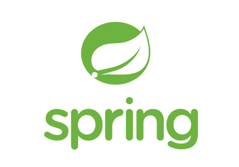

Interested Technology
Java 기반의 애플리케이션 프레임워크
스프링은 Java 백엔드의 핵심 기술로서,
자바 엔터프라이즈 애플리케이션 개발에 사용되는 오픈소스 경량급 애플리케이션 프레임워크입니다.
Spring은 다양한 기능과 모듈을 제공하여 개발자가 더 쉽고 효율적으로 애플리케이션을 개발할 수 있도록 돕습니다.
주요 기능 및 특징
IoC
(Inversion of Control)
(Inversion of Control)
"제어의 역전"이라는 뜻으로, 소프트웨어 컴포넌트 간의 의존성 관리를 개선하는 디자인 패턴
DI
(Dependency Injection)
(Dependency Injection)
의존성 객체를 개발자가 생성하지 않고 클래스를 Bean으로 등록해놓으면 Bean으로 등록된 객체를 프레임워크가 찾아서 알아서 주입해주는 기술이다. 이를 통해 모듈간의 결합도를 낮출 수 있다.
AOP
(Aspect Oriented Programming)
(Aspect Oriented Programming)
"관점 지향 프로그래밍"이라는 뜻으로, 프로그램의 핵심 로직 외에 부가적인 횡단 관심사(Cross-cutting Concerns)를 모듈화하는 개념
PSA
(Portable Service Abstraction)
(Portable Service Abstraction)
"이식 가능한 서비스 추상화"라는 뜻으로, 서로 다른 기술 스택을 사용하는 여러 환경에서 공통된 API를 사용하여 개발을 간소화하는 개념
POJO
(Plan Old Java Object)
(Plan Old Java Object)
"평범한 옛날 자바 객체"라는 뜻으로, 간단하고 가벼운 자바 객체를 말한다. POJO는 특정한 인터페이스나 프레임워크에 종속되지 않고, 자바의 기본적인 객체 지향 프로그래밍 원칙을 따르는 객체를 의미한다.
MVC 디자인 패턴
MVC는 Model, View, Controller의 약자로,
클라이언트와 상호작용하는 소프트웨어를 설계함에 있어 세가지 요소로 나누어 설계하는 것을 말합니다.
Model
Model은 애플리케이션의 정보, 데이터의 가공을 책임지며 데이터베이스와 상호작용하여 비즈니스 로직을 처리하는 모듈. 즉, 컴포넌트를 말한다.
Model은 아래와 같은 규칙을 가지고 있다.
View
View는 클라이언트 단에서 보여지는 결과화면을 반환하는 모듈. 즉, 사용자 인터페이스 요소를 말하며 아래와 같은 규칙들을 가지고 있다.
→ Model이나 Controller에 대한 정보를 알면 안된다.
Controller
Controller는 client로부터 request가 들어왔을 때 그 입력을 처리하고 어떤 로직을 실행시킬 것인지 Model과 View를 연결해주며 제어하는 모듈을 말한다. Controller는 아래와 같은 규칙들을 가지고 있다.